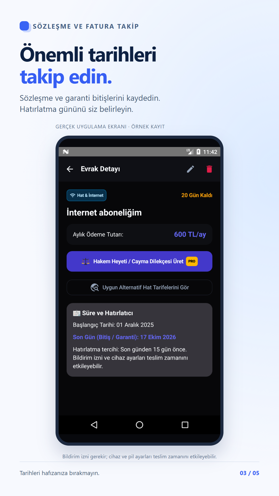

Sözleşme ve internet taahhüdü bitiş tarihini takip edin
İnternet, telefon veya kira sözleşmenizin tarihlerini tek bir kayıtta tutmak, sürenin sonuna yaklaşırken belgeyi yeniden bulmanızı kolaylaştırır. Uygulama hizmet sağlayıcınızdan sözleşme bilgilerini otomatik olarak çekmez; kayıtları siz eklersiniz.
Önce doğru tarihi bulun
Sözleşme başlangıcı, fatura son ödeme günü ve taahhüt bitişi aynı tarih olmayabilir. Hatırlatmak istediğiniz tarihi sözleşmeden veya sağlayıcınızın hesabından doğrulayın.
Belgeyi ve tarihleri kaydedin
- Evrakı tarayın veya manuel kayıt oluşturun.
- “Ev interneti sözleşmesi” gibi açıklayıcı bir başlık girin.
- İlgili kategori, başlangıç ve bitiş tarihlerini kontrol edin.
- Uygulamada sunulan hatırlatma seçeneklerinden size uygun olanı seçip kaydedin.

Hatırlatma neden gelmeyebilir?
Uygulamanın bildirim iznini ve telefonunuzun pil kısıtlamalarını kontrol edin. Cihazın kapalı olması veya sistem ayarları bildirimin teslim zamanını etkileyebilir. Önemli tarihler için yalnızca tek bir bildirime güvenmeyin; kaydı arada kontrol edin.
Hatırlatma sözleşmeyi iptal eder mi?
Hayır. Tarih kaydetmek veya bildirim almak sözleşmenizi iptal etmez, yenilemeyi durdurmaz ve sağlayıcıya başvuru göndermez. Gereken işlemleri sağlayıcının resmî kanallarından kendiniz tamamlamalısınız.
Sözleşme kopyasını yedekleme · Garanti belgelerini düzenleme
Google Play'de uygulamayı görüntüleÜcretsiz sürüm reklam ve evrak sınırı içerir; ek özellikler PRO'dadır.